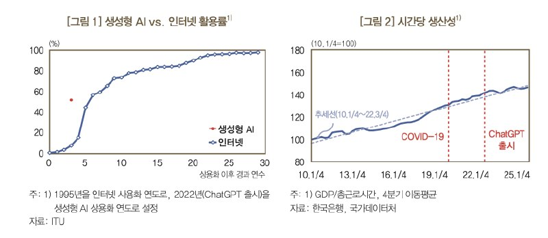
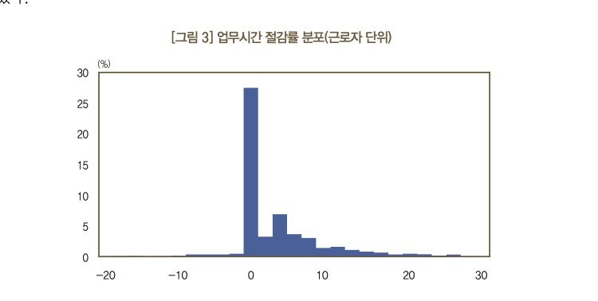
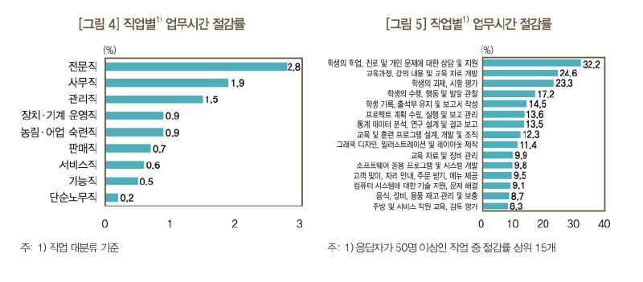
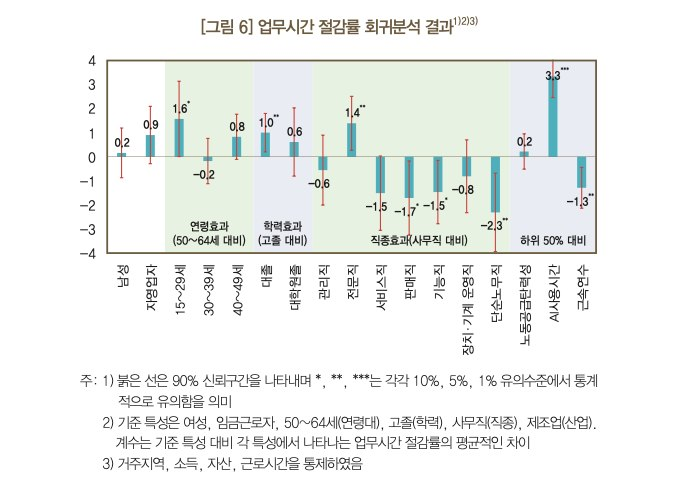
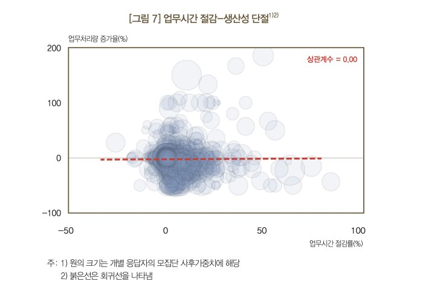
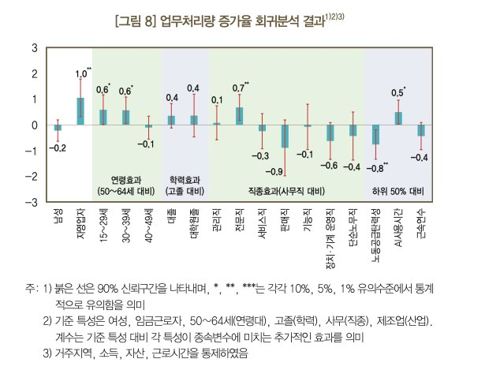
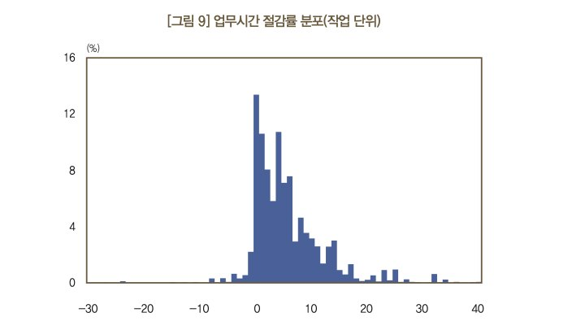
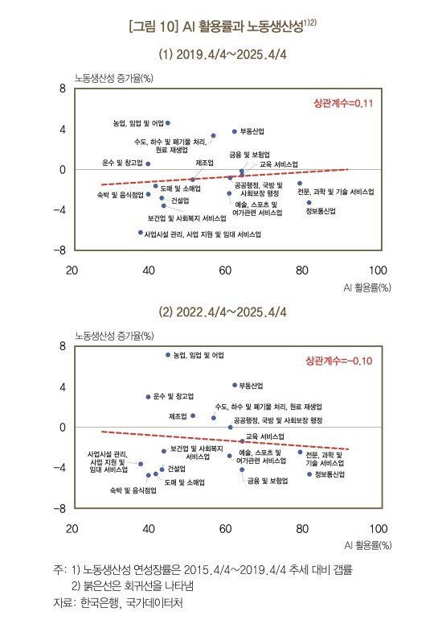

한국은행이 5,512명 근로자에게 물었다. “AI 쓰시나요?” 절반 이상이 그렇다고 답했다. 그다음 질문이 본론이었다. “그래서, 일이 줄었나요? 더 많이 하게 됐나요?” 답은 묘하게 엇갈렸다. 일하는 시간은 줄었다. 하지만 하는 일은 늘지 않았다.

2026년 6월, 한국은행 조사국 고용연구팀의 서동현·오삼일·윤종원이 BOK 이슈노트 제2026-12호로 발간한 이 보고서는 ChatGPT 출시 3년 차의 한국을 관통하는 질문 하나를 던진다. AI는 생산성을 높이고 있는가?
답부터 말하면 — 아직은 아니다. 개별 작업은 확실히 빨라졌다. 하지만 그게 조직의 산출물로 이어지지 않는다. 시간은 줄었는데, 하는 일은 안 늘었다. 한국은행은 이걸 **“생산성 단절(disconnect)“**이라고 불렀다.

Q. AI 쓰면 진짜 일이 줄어드나요?
네, 줄어듭니다.
생성형 AI를 업무에 활용하는 근로자의 평균 업무시간은 3.8% 감소했다. 주 40시간 기준으로 주당 1.5시간이 사라진 셈이다. 이걸 생산성 증가로 환산하면 약 1.0%의 잠재적 생산성 향상 효과.
하지만 분포를 보면 이야기가 달라진다. 대다수는 거의 변화가 없다. 효과가 큰 사람은 극소수.

누구에게 이 효과가 집중되느냐. 직업별로 보면 전문직(2.8%) > 사무직(1.9%) > 관리직(1.5%) 순이다. 서비스직, 기능직, 단순노무직에서는 효과가 제한적.

작업 단위로 보면 더 선명하다. 교육자료 개발(24.6%), 통계분석(13.5%), 소프트웨어 개발(9.8%) 같은 인지적 업무에서 절감 효과가 크다. 반면 “고객 맞이, 자리 안내”나 “음식 재고 관리” 같은 물리적·반복 작업에서는 AI의 손길이 닿지 않는다.

그리고 회귀분석에서 흥미로운 패턴이 나온다. 저숙련자에게 더 큰 효과가 나타난다. AI 사용시간이 많을수록, 교육(훈련) 연수가 짧을수록 절감 효과가 크다. AI가 경험 부족을 보충하는 ‘평등화 효과(equalizing effect)‘를 수행하고 있다는 것. 경력 짧은 신입이 AI와 함께 일하면 베테랑과의 격차가 줄어든다.

Q. 그런데 시간 줄었다고 생산성 오른 건 아니죠?

맞다. 여기가 이 보고서의 핵심이다.
업무시간 절감률(X축)과 업무처리량 증가율(Y축)의 상관계수를 계산했더니, 0.00이 나왔다. 아예 관계가 없다.
AI로 20% 일이 빨리 끝나는 사람도 있고, 0%인 사람도 있다. 그런데 일이 빨리 끝난다고 더 많은 일을 하는 것은 아니다. 절약된 시간은 그냥… 사라진다. 혹은 유휴시간이 된다.
한국은행은 이렇게 진단한다.
개별 작업 수준에서는 효율이 높아졌지만, 업무 흐름(workflow) 개선, 조직 구조 변화, 인력 재배치로 확장되지 못하면서 ‘단절’이 발생하고 있다.
Q. 그럼 예외는 없나요?
있다. 세 가지 집단에서는 시간 절감이 실제 생산 증가로 이어졌다.
첫째, 자영업자. 업무시간이 1%p 줄 때 임금근로자보다 업무처리량이 1.0%p 더 증가했다. 성과가 곧 소득으로 연결되니, 절약된 시간을 더 일하는 데 쓰는 것이다. 당연하다.
둘째, 청년층(15~39세). 50~64세 대비 업무처리량이 0.6%p 더 증가했다. 디지털 네이티브의 적응력이 생산성으로 이어지는 증거다.
셋째, 전문직과 AI 고강도 사용자. 전문직은 0.7%p, AI를 많이 쓰는 사람은 0.5%p 추가 증가.

공통점이 보인다. 스스로 업무를 재구성할 수 있는 사람들이다. 조직이 정해준 흐름에 갇혀 있지 않고, 성과가 보상과 직결되며, 무엇보다 AI를 ‘도구’가 아니라 ‘작업 파트너’로 쓰는 사람들.
Q. 왜 조직에선 이게 안 될까?
보고서는 네 가지 원인을 든다.
① 작업 수준에 머무는 AI 확산. 전체 업무 흐름이 아니라 특정 작업에만 AI가 쓰인다. 보고서 요약은 AI가 하지만, 회의는 여전히 길다. 업무시간 절감률이 20%를 넘는 작업은 4.4%에 불과하다.
② 업무 흐름의 경직성. AI가 한 단계를 빠르게 해도, 다음 단계의 승인·협업 방식은 그대로다. 병목이 안 풀리면 빨리 끝난 게 의미가 없다.
③ 병목(bottleneck)의 존재. 문서 작성은 AI가 10분 만에 끝내도, 결재 라인이 3일 걸리면 전체 산출은 변하지 않는다. 생산성은 ‘가장 느린 단계’에 의해 결정된다.
④ 유인구조의 불일치. 더 많이 일해도 월급이 같다면, 사람은 남는 시간에 일을 더 하지 않는다. Chen et al.(2025)의 실험에선 전문 그림 작가들이 AI로 시간당 품질은 높였지만, 대다수가 작업 시간을 줄였다. 심지어 일부는 최종 품질까지 낮아졌다.
Q. 그래서 어떻게 해야 한다는 건가요?
한국은행은 AI를 ‘효율성’ 단계에서 ‘생산성’ 단계로 넘어가는 전환기로 진단한다. 과거 전기, 인터넷이 그랬듯이. Solow 역설이라고도 부른다. “컴퓨터 시대는 어디에나 보이지만, 생산성 통계에는 나타나지 않는다”는 그 역설.
이 보고서가 제시하는 해법은 기술이 아니라 조직에 관한 것이다.
표준화 업무는 AI가 중심이 되게
보고서 요약, 회계 처리, 규정 검토 같은 표준화 업무에서는 AI를 ‘보조 도구’가 아니라 작업의 중심으로 재설계하라고 권한다. 입력 데이터 표준화, 업무 모듈화, 결과 검증 절차 명확화가 선행되어야 한다. 인간의 역할은 ‘직접 하기’에서 ‘목표 설정·결과 검증·예외 대응’으로 이동한다.
열린 업무는 인간-AI 협업으로
신규 사업 기획, 전략 수립, 연구개발 같은 ‘열린 업무’에서는 AI가 인간을 대체하는 게 아니라 증강(augmentation)해야 한다. AI가 아이디어 탐색과 초안 작성을 하고, 인간이 해석·평가·최종 의사결정을 내리는 구조.
학습 경로를 다시 그려야 한다
가장 흥미로운 지적은 여기다. 전통적으로 표준화 업무는 신입사원의 학습 경로였다. 자료 정리, 기초 분석, 정형 보고서 작성—이게 생산 활동인 동시에 숙련 형성 과정이었다. 이걸 AI가 대체하면, 신입은 어떻게 도메인 감각을 키우나?
보고서는 세 가지를 제안한다.
- 신입이 열린 업무에 조기 참여하는 경로 설계 (관찰→보조→주도)
- AI로 시간이 절약된 시니어의 시간을 멘토링·페어워크에 재투입
- AI가 자동화한 영역의 ‘왜 그 결과가 나오는가’를 학습하는 구조 마련
시간은 줄었다. 그 다음이 문제다.
이 보고서가 말하는 건 단순하다. AI는 개별 작업의 효율성을 이미 올렸다. 하지만 그게 조직의 생산성으로 이어지려면, 조직이 변해야 한다. 업무 흐름을 재설계하고, 유인 구조를 맞추고, 학습 경로를 다시 그려야 한다.
AI의 생산성 효과는 기술 수준보다 작업 구조와 유인 체계에 의해 결정된다. 3년 차의 한국은 그 전환의 한가운데 있다.
현재 AI는 ‘효율성(efficiency)’ 단계에는 진입했으나 아직 ‘생산성(productivity)’ 단계로는 충분히 전환되지 못한 상태로 평가된다. — BOK 이슈노트 제2026-12호
참고: 본 글은 한국은행 BOK 이슈노트 제2026-12호 “AI 도입은 생산성을 높이는가? 초기 3년의 효과 분석”(서동현·오삼일·윤종원, 2026.6.8)을 바탕으로 작성되었습니다. 본 자료의 내용은 한국은행의 공식견해가 아닙니다.